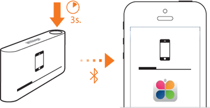

| 5/6 | How to sync your Pulse? Your Withings Pulse syncs automatically all through the day, so you have your latest data of steps, elevation, distance, calories or night on your iPhone. You don’t even have to open the Health Mate app. If you want to force the data transfer, please press the Pulse top button for 3 seconds.  Syncing your Pulse to the Health Mate app will display your data into an understandable graph in order to help you reach your goals. |